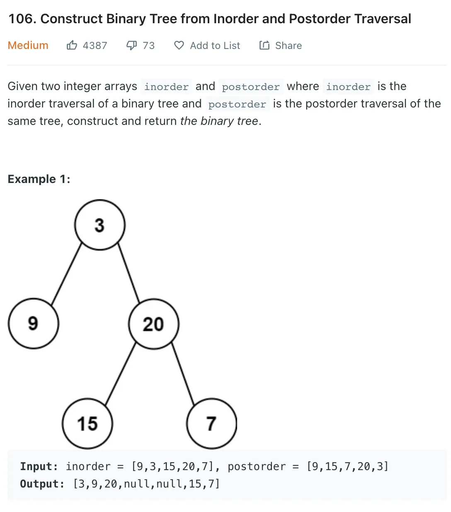
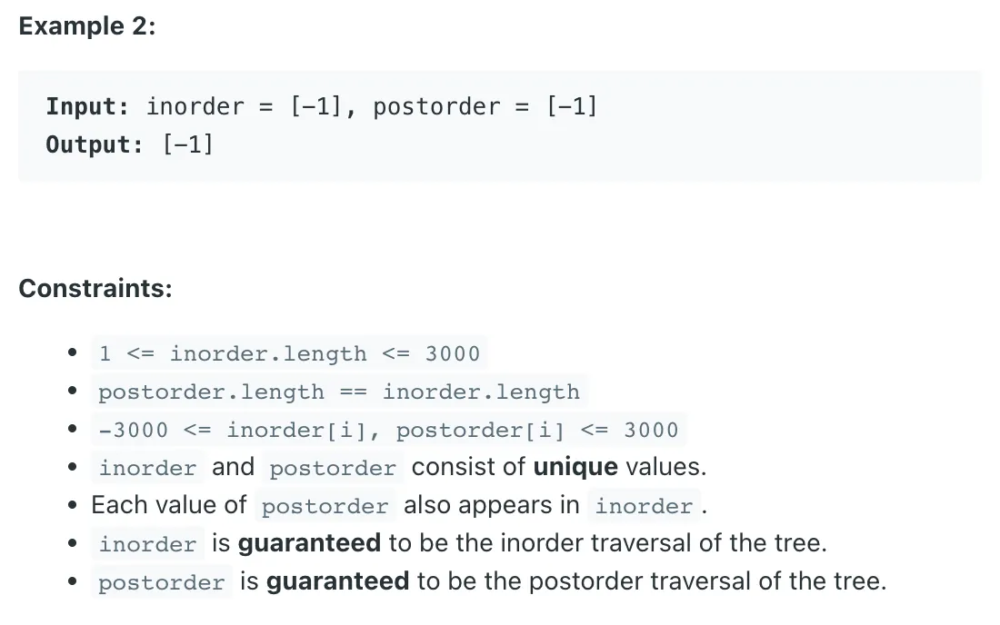

106. Construct Binary Tree from Inorder and Postorder Traversal
考過的公司：Shopee
Question


✍🏽 My Solution
class Solution {
int[] inorder;
int[] postorder;
int postIndex; // 在 postorder 中的 index
Map<Integer, Integer> inorderMap = new HashMap<>();
public TreeNode buildTree(int[] inorder, int[] postorder) {
this.inorder = inorder;
this.postorder = postorder;
int n = inorder.length;
postIndex = n-1;
for (int i = 0; i < n; i++) {
inorderMap.put(inorder[i], i);
}
return buildHelper(0, n - 1);
}
TreeNode buildHelper(int inStart, int inEnd) {
if (inStart > inEnd) {
return null;
}
TreeNode root = new TreeNode(postorder[postIndex--]);
int inIdx = inorderMap.get(root.val);
// 因为采用了 postIndex 每次减一的方法，所以必须先递归生成右子树再递归生成左子树！！！
root.right = buildHelper(inIdx + 1, inEnd);
root.left = buildHelper(inStart, inIdx - 1);
return root;
}
}
🧠 Thought Process
- What mistakes did I make?
- 忘記要先遞歸右子樹
Solution #1 [古城算法-HashMap]
Runtime: 3 ms, faster than 79.47% of Java online submissions for Construct Binary Tree from Inorder and Postorder Traversal. Memory Usage: 44.7 MB, less than 27.77% of Java online submissions for Construct Binary Tree from Inorder and Postorder Traversal.
class Solution {
int[] inorder;
int[] postorder;
int postIndex; // 在 postorder 中的 index
Map<Integer, Integer> inorderMap = new HashMap<>();
public TreeNode buildTree(int[] inorder, int[] postorder) {
this.inorder = inorder;
this.postorder = postorder;
int n = inorder.length;
postIndex = n-1;
for (int i = 0; i < n; i++) {
inorderMap.put(inorder[i], i);
}
return buildHelper(0, n - 1);
}
TreeNode buildHelper(int inStart, int inEnd) {
if (inStart > inEnd) {
return null;
}
TreeNode root = new TreeNode(postorder[postIndex--]);
int inIdx = inorderMap.get(root.val);
// 因为采用了 postIndex 每次减一的方法，所以必须先递归生成右子树再递归生成左子树！！！
root.right = buildHelper(inIdx + 1, inEnd);
root.left = buildHelper(inStart, inIdx - 1);
return root;
}
}
Explanation (in my words)
- How does their solution work?
- 首先来看题目给出的两个已知条件 中序遍历序列 和 后序遍历序列 根据这两种遍历的特性我们可以得出两个结论
- 在后序遍历序列中,最后一个元素为树的根节点
- 在中序遍历序列中,根节点的左边为左子树，根节点的右边为右子树
-
树的还原过程描述
根据中序遍历和后续遍历的特性我们进行树的还原过程分析
- 首先在后序遍历序列中找到根节点(最后一个元素)
- 根据根节点在中序遍历序列中找到根节点的位置
- 根据根节点的位置将中序遍历序列分为左子树和右子树
- 根据根节点的位置确定左子树和右子树在中序数组和后续数组中的左右边界位置
- 递归构造左子树和右子树
- 返回根节点结束
- 創建以下變數
- HashMap 需要一个哈希表来保存中序遍历序列中，元素和索引的位置关系。因为从后序序列中拿到根节点后，要在中序序列中查找对应的位置，从而将数组分为左子树和右子树；
- postIndex：当前子树根节点在中序遍历数组中的索引位置；
- inStart，inEnd：当前子树在中序遍历数组的起始位置和结束位置标记；
使用上述变量定义时，需要注意的是：
- postIndex 每次减一，即 postIndex--；
- 写递归调用的时候，要先递归调用生成右子树，再递归调用生成左子树。
- 首先来看题目给出的两个已知条件 中序遍历序列 和 后序遍历序列 根据这两种遍历的特性我们可以得出两个结论